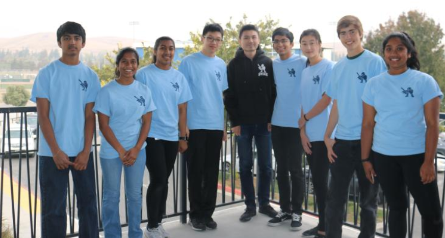
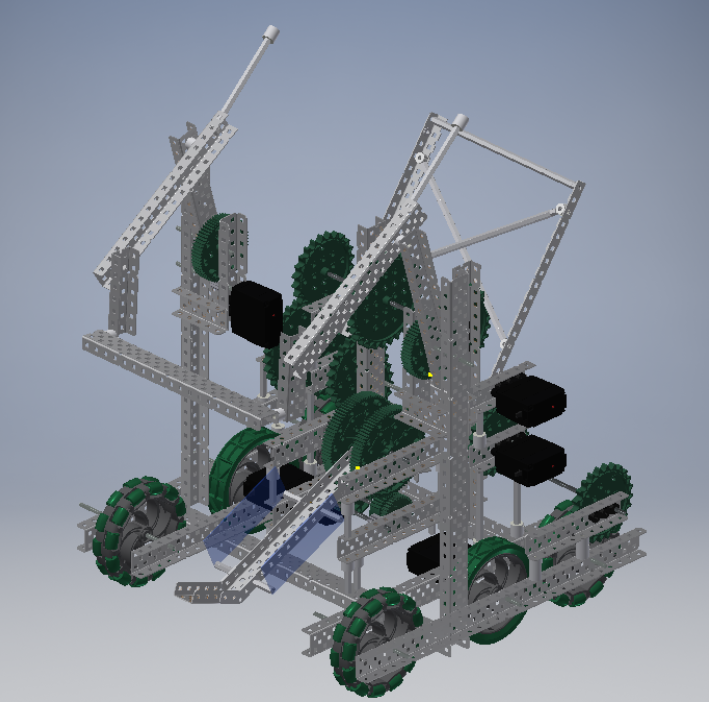

About Us
Gael Force Robotics Club is an organization dedicated to providing a meaningful engineering experience through the VEX Robotics Competition. The organization contains five competition teams aimed at competitive success in the Northern California region, and one development academy, with a goal of educating the newer, less-experienced members to prepare their skills for a competitive environment. Our competition teams have experienced much success in our region, becoming a notable name that commonly wins judged awards and perform well in the tournament itself. This team, Gael Force R, is one of these teams that aspire to mirror the success of our organization and excel competitively, while at the same time fostering the talents of the less experienced members to ensure that they advance both as engineers and as individuals. We hope to strive for the best in all aspects of engineering, and create a nondiscriminatory and trusted environment while doing so. While competitive viability is important, far more important is the education and growth of all of our members, both in our team and in our club, as we interact with all fields of STEM. We want to work efficiently and allow for input from each and every member. Each of our members, despite their varying experience with VEX Robotics specifically, were picked due to their dedication and desire to learn and succeed. Our primary goal as a team is the development of our talents in not just engineering-related fields, but in all. VEX Robotics is far more than just building a robot. There is a strong communal aspect of sharing ideas and interaction that our team believes is essential and beneficial. As a team, we hope to learn how to design, build, document, interact, and much more.
Our Robot
- Base:
- Tank Drive
- H drive
- 6 wheel, 4 motor
- Crossbars on bottom to allow lower attachment of other features and lower center of gravity
- Base wide intake, attached “hanging” ; empty space when climbing
- 6 motor to 4 motor because excessive amount of motors was not as effective as expected
- Move side channels by 1 hole in for proper sizing
- Chain allows for slop and skipping, which is necessary if there's too much resistance
- Center wheel with 2 bands
- Catapult
- Change from flywheel
- New decision matrix displayed in notebook
- Smaller 20 hole catapult compared to standard (25)
- Shorter length means less torque
- Banding is close at first and stretches out later to provide more resistance, power function
- Double ball catapult
- Instead of having pinion to slip gear to 84 tooth, we have pinion and slip gear on side and 84 is perpendicular for lower center of gravity
- Center of gravity would be more to center
- Double ball catapult
- Ratchet
- Powered at both sides of the gear
- Ball Intake:Rollers
- Size is increasingly smaller and wider so that it is smoother, 2 balls to be taken ins
- Most catapults deal with the issue of ball sliding back into intake. This is because the gear is orientated forward. Our gears are not orientated this way because the gear will bounce back only into the gear
- 7 to 3 and then 7 to 5, outer one is as fast as possible for more power when launch, and more torque on other side so nothing will slip or break
- Standoff instead of axle because of bending
- Two Bar Cap Intake/Lift
- 2 bar lift as opposed to the more common 4 bar, 6 bar, or rd4b designs
- 2 bar is only truly effective for the short posts, which may seem like a big issue, but it is much faster, which is far more important for caps; caps are not a popular scoring method since they take too long, 2 bar is most effective work around
- Lift flips out rather than just being a regular 2 bar to fit in size. This is due to our centered catapult but also allows us to precisely tune the positioning better
- 4 bar, 6 bar, rd4b take precise driving, 2 bar can be tuned to minimize human error
- Positioning to put cap on post is to simply slam the robot against the wall aligned with the center to the post with a 2 inch leeway due to the shape of the cap
- When it places on post, it automatically flips the cap as well
- Can also be used as a descorer for both the high post and low post
- Only low post is not a big issue since rarely will 4+ caps be scored on posts in a match
- Flipper focused on ground caps, this focuses on posts since its much faster to have separate mechanisms for them
- Works entirely around catapult due to flipout mechanism
- Can be used to push center parked robots
- Can descore like a normal 2 bar descorer, most efficient cap mechanism.
Contact Us
Dublin, CA
gaelforcer@gmail.com